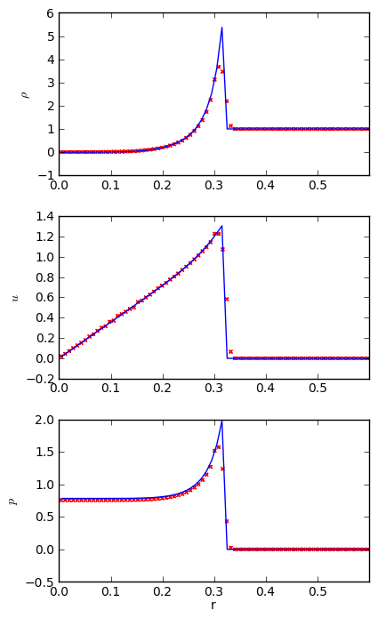

∗ Compressible hydrodynamics solver
pyro's compressible solver is based on a directionally unsplit piecewise linear method for the Euler equations. The basic theory is outlined in Chapter 5 of the notes:
The implementation here has flattening at shocks, artificial viscosity, a simple gamma-law equation of state, and two different Riemann solvers. Optional constant gravity in the vertical direction is allowed.
The main parameters that affect this solver are:
| [driver] | |
| cfl | the advective CFL number (what fraction of a zone can we cross in a single timestep) |
| [compressible] | |
| use_flattening | do we flatten the profiles at shocks? (0=no, 1=yes) |
| z0, z1, delta | the parameters that affect the flattening algorithm |
| cvisc | the coefficient for the artifical viscosity |
| limiter | what type of limiting to use in reconstructing the slopes. 0 means use an unlimited second-order centered difference. 1 is the MC limiter, and 2 is the 4th-order MC limiter |
| riemann | which Riemann solver do we use? "HLLE" for the HLLE solver, or "CGF" for the Colella, Glaz, and Ferguson solver |
| grav | the gravitational acceleration (vertical/y direction) |
| [eos] | |
| gamma | the constant adiabatic index for the gas |
∗ Examples
Sod
The Sod problem is a standard hydrodynamics problem. It is a one-dimensional shock tube (two states separated by an interface), that exhibits all three hydrodynamic waves: a shock, contact, and rarefaction. Furthermore, there are exact solutions for a gamma-law equation of state, so we can check our solution against these exact solutions. See Toro's book for details on this problem and the exact Riemann solver.
Because it is one-dimensional, we run it in narrow domains in the x- or y-directions. It can be run as:
./pyro.py compressible sod inputs.sod.x ./pyro.py compressible sod inputs.sod.y
A simple script, sod_compare.py in analysis/ will read a pyro output file and plot the solution over the exact Sod solution. Below we see the result for a Sod run with 128 points in the x-direction, gamma = 1.4, and run until t = 0.2 s.

We see excellent agreement for all quantities. The shock wave is very steep, as expected. The contact wave is smeared out over ~5 zones—this is discussed in the notes above, and can be improved in the PPM method with contact steepening.
Sedov
The Sedov blast wave problem is another standard test with an analytic solution (Sedov 1959). A lot of energy is point into a point in a uniform medium and a blast wave propagates outward. The Sedov problem is run as:
./pyro.py compressible sedov inputs.sedov
The image below shows the output from a 128 x 128 grid with the energy put in a radius of 0.0125 surrounding the center of the domain. A gamma-law EOS with gamma = 1.4 is used, and we run until 0.1
We see some grid effects because it is hard to initialize a small circular explosion on a rectangular grid. To compare to the analytic solution, we need to radially bin the data. Since this is a 2-d explosion, the physical geometry it represents is a cylindrical blast wave, so we compare to Sedov's cylindrical solution. The radial binning is done with the sedov_compare.py script in analysis/

This shows good agreement with the analytic solution.
quad
The quad problem sets up different states in four regions of the domain and watches the complex interfaces that develop as shocks interact. This problem has appear in several places (and a detailed investigation is online by Pawel Artymowicz). It is run as:
./pyro.py compressible quad inputs.quad

rt
The Rayleigh-Taylor problem puts a dense fluid over a lighter one and perturbs the interface with a sinusoidal velocity. Hydrostatic boundary conditions are used to ensure any initial pressure waves can escape the domain. It is run as:
./pyro.py compressible er inputs.rt
bubble
The bubble problem initializes a hot spot in a stratified domain and watches it buoyantly rise and roll up. This is run as:
./pyro.py compressible bubble inputs.bubble

The shock at the top of the domain is because we cut off the stratified atmosphere at some low density and the resulting material above that rains down on our atmosphere. Also note the acoustic signal propagating outward from the bubble (visible in the U and e panels).
∗ Exercises
Explorations
- Measure the growth rate of the Rayleigh-Taylor instability for different wavenumbers.
- There are multiple Riemann solvers in the compressible algorithm. Run the same problem with the different Riemann solvers and look at the differences. Toro's text is a good book to help understand what is happening.
- Run the problems with and without limiting—do you notice any overshoots?
Extensions
- Limit on the characteristic variables instead of the primitive variables. What changes do you see? (the notes show how to implement this change.)
- Add passively advected species to the solver.
- Add an external heating term to the equations.
- Add 2-d axisymmetric coordinates (r-z) to the solver. This is discussed in the notes. Run the Sedov problem with the explosion on the symmetric axis—now the solution will behave like the spherical sedov explosion instead of the cylindrical explosion.
- Swap the piecewise linear reconstruction for piecewise parabolic (PPM). The notes and Miller and Colella paper provide a good basis for this.
- Research the Roe Riemann solver and implement it in pyro.
∗ Going further
The compressible algorithm presented here is essentially the single-grid hydrodynamics algorithm used in the Castro code—an adaptive mesh radiation hydrodynamics code developed at CCSE/LBNL. Castro is freely available for download.
A simple, pure Fortran, 1-d compressible hydrodynamics code that does piecewise constant, linear, or parabolic (PPM) reconstruction is also available. See the hydro1d page.